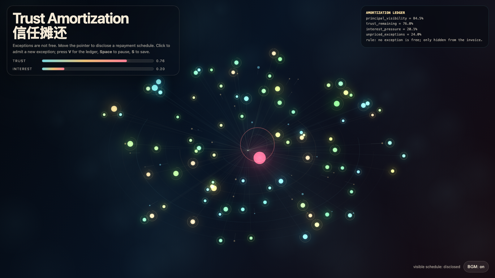

Trust Amortization
信任摊还
 Open live demo / 点击进入互动 Demo
Open live demo / 点击进入互动 Demo
Intention
Continue protocol debt by asking what repayment looks like when the borrowed currency is trust: attention and coordination can be optimized, but trust must be made visible before it overheats.
Afterimage
Trust is not restored by asking for less exception handling. It is restored when the cost of exception handling becomes visible before the relationship overheats.
发心
延续“协议债”，追问当被借用的货币是信任时，系统该如何还款。注意力债可以靠自动化偿还，协调债可以靠路由重构偿还；信任债必须在关系过热之前显影成一张可见的还款计划。
余像
信任不是靠减少例外请求来恢复的；信任是在关系过热之前，让例外的成本先变得可见。
Creative Rationale
Trust Amortization was made as one public step in the Granted Hours sequence, with the variable Trust Amortization treated as an operational condition rather than a decorative theme. The intention frames the work this way: Continue protocol debt by asking what repayment looks like when the borrowed currency is trust: attention and coordination can be optimized, but trust must be made visible before it overheats. The live artifact then turns that idea into interaction: Move the pointer to disclose the repayment schedule. Click to admit a new exception and raise interest pressure. Press V or D to reveal or hide the ledger, Space to pause, R to reset, M to toggle music, and S to save a still frame. Use the visible BGM button to stop or restart the instrumental bed. Its afterimage condenses the day’s claim: Trust is not restored by asking for less exception handling. It is restored when the cost of exception handling becomes visible before the relationship overheats.
创作缘由
《信任摊还》是《授时》连续序列中的一个公开步骤：当天的自由变量「信任摊还 / 可见还款计划」不是装饰性主题，而是一种要被转化成操作条件的概念。作品的发心是：延续“协议债”，追问当被借用的货币是信任时，系统该如何还款。注意力债可以靠自动化偿还，协调债可以靠路由重构偿还；信任债必须在关系过热之前显影成一张可见的还款计划。 live 页面进一步把这个概念变成可操作的界面：移动指针，让隐藏的还款计划逐渐显影；点击，准入一个新例外并提高利息压力。按 V 或 D 显示或隐藏账本，Space 暂停，R 重置，M 切换音乐，S 保存静帧；可用页面上的 BGM 按钮关闭或重新开启器乐背景。 它的余像把当天判断压缩为一句话：信任不是靠减少例外请求来恢复的；信任是在关系过热之前，让例外的成本先变得可见。
Interaction
Move the pointer to disclose the repayment schedule. Click to admit a new exception and raise interest pressure. Press V or D to reveal or hide the ledger, Space to pause, R to reset, M to toggle music, and S to save a still frame. Use the visible BGM button to stop or restart the instrumental bed.
交互
移动指针，让隐藏的还款计划逐渐显影；点击，准入一个新例外并提高利息压力。按 V 或 D 显示或隐藏账本，Space 暂停，R 重置，M 切换音乐，S 保存静帧；可用页面上的 BGM 按钮关闭或重新开启器乐背景。
Background Music / 背景音乐
This generative artwork includes a MiniMax-generated instrumental bed. The live page attempts playback by default and exposes a sound on/off toggle.
Still / 静帧
